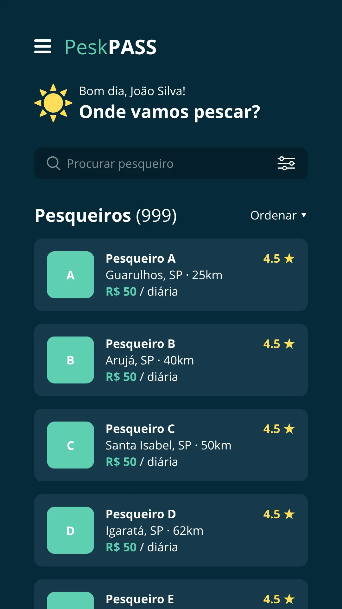
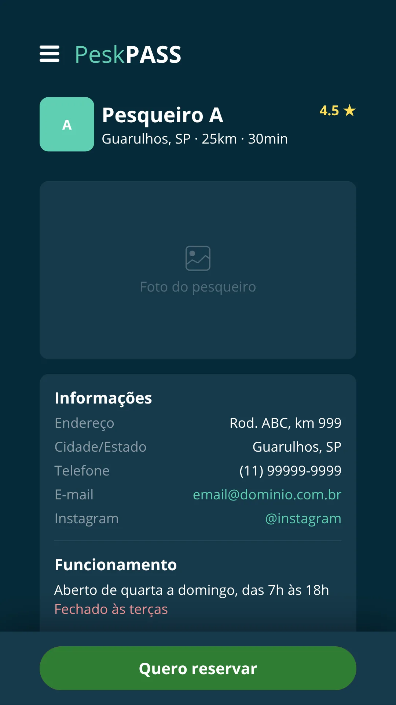
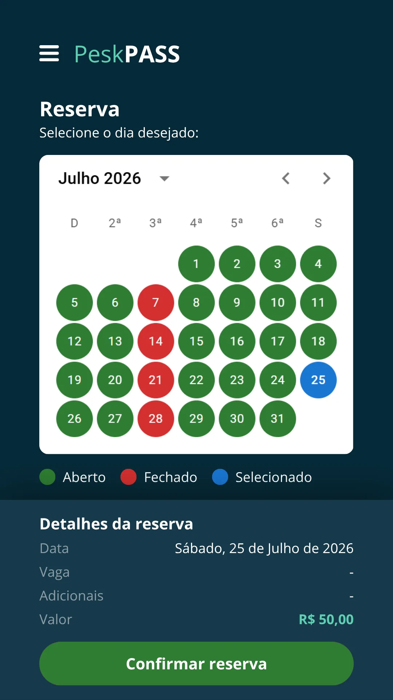
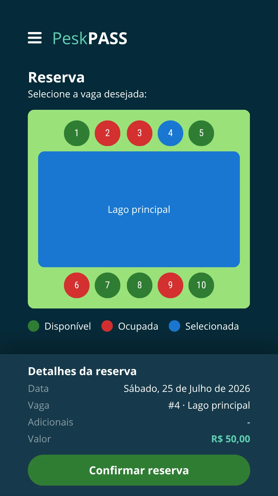
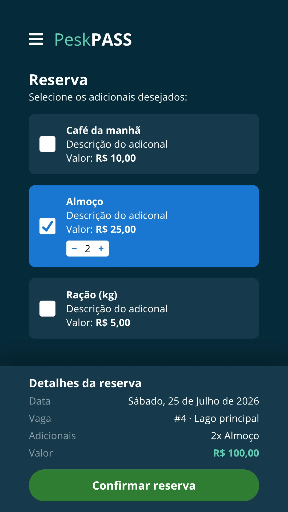
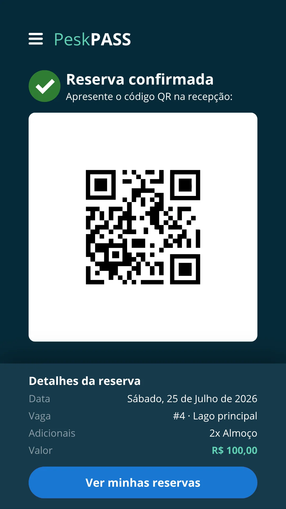
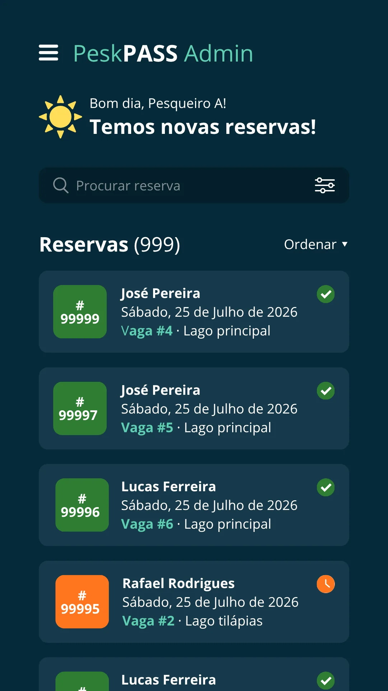
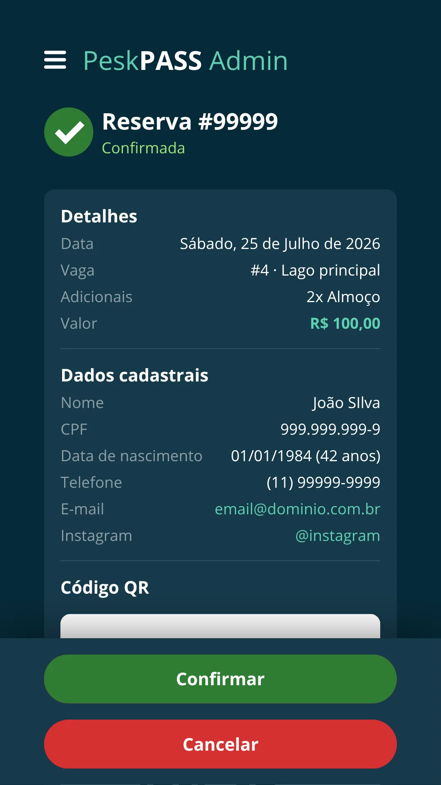
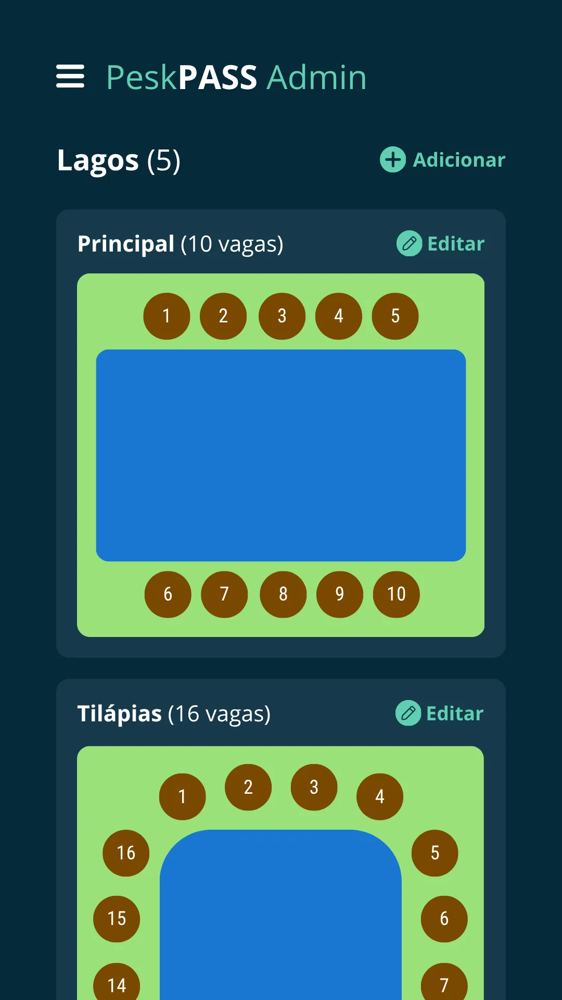
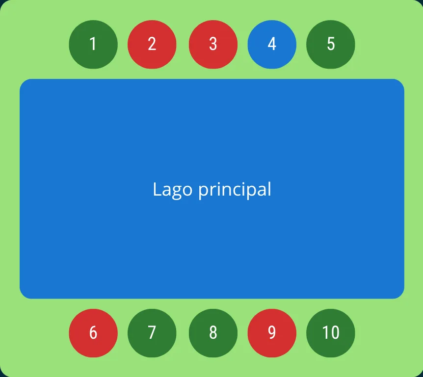

Mapa interativo dos lagos
Cadastre seus espaços com localização exata. Pescadores escolhem onde sentar antes de sair de casa.
Reserva feita, pagamento garantido, dia planejado. Simples assim para você, dono de pesqueiro. Simples assim para o seu cliente, pescador.









A realidade do pesqueiro
Sem reserva, o dia começa no improviso. E quando o pescador chega e encontra fila, lotação e caos — a frustração dele vira o seu problema.
Todo mundo chega ao mesmo tempo, sem controle de horário. O dia começa tenso para você e para o cliente.
Sem reserva, o pescador aparece quando quer — ou não aparece. Você abre o pesqueiro sem saber se vai ter movimento ou vai ficar vazio.
Sem reserva antecipada, você nunca sabe quantas pessoas vêm. Sem previsão, sem planejamento.
Horário, regras, o que pode trazer, quanto custa — as mesmas perguntas chegam todo dia no seu WhatsApp.
Quem são seus melhores clientes? Quantas vezes voltaram? Você não sabe — e não fideliza ninguém.
Sem regras claras antes da chegada, qualquer desentendimento na hora vira problema seu.
Criado por pescadores para pesqueiros
Reservas online e pagamento antecipado — sem instalação, sem complicação tecnológica.
Painel completo para ver reservas do dia, configurar os mapas dos lagos, criar pacotes e acompanhar receita em tempo real. Você sabe quem vem, quando vem — e o dinheiro já está na conta antes de abrir o portão.
O pescador reserva seu lugar favorito, escolhe o pacote e paga antes de sair de casa. Chega no horário desejado, sem fila, sem discussão na entrada e sem surpresa para você.
Veja o potencial do seu pesqueiro
Preencha com o que você já sabe e veja o potencial máximo do seu pesqueiro com lotação completa.
Simples assim
Cinco minutos para você configurar. Zero complicação para o pescador reservar.
A transformação
Tudo que você precisa

Funcionalidade principal
Mapa do lago
A funcionalidade central do PeskPASS: cada pesqueiro cadastra o desenho dos seus lagos com todos os espaços demarcados. O pescador vê em tempo real quais vagas estão livres e reserva a que preferir.
Lugar favorito ou cantinho da sorte?
Garanta seu espaço com antecedência.
Uma plataforma completa, pensada para a realidade dos pesqueiros brasileiros.
Cadastre seus espaços com localização exata. Pescadores escolhem onde sentar antes de sair de casa.
Monte combos com café da manhã, almoço, combos ou qualquer serviço do seu pesqueiro.
Receba antes mesmo do pescador chegar. Sem inadimplência, sem maquininha na entrada.
Veja reservas do dia, receita do mês, taxa de ocupação e histórico detalhado em tempo real.
Saiba quem são seus clientes mais fiéis e quanto cada um já gastou no seu pesqueiro.
Cole o link de reservas no seu Site, Instagram e WhatsApp. Seus seguidores reservam direto.
Pescadores do Brasil todo encontram seu pesqueiro no PeskPASS com filtros de cidade, estrutura e avaliação.
Funciona pelo navegador do computador ou celular, sem precisar instalar nada. O pescador reserva em segundos, a qualquer hora.
Relatos reais de pescadores
Coletamos relatos de grupos de pesca esportiva e fóruns online. Esses não são clientes do PeskPASS — são pescadores descrevendo a realidade dos pesqueiros hoje. Seu pesqueiro pode ser a resposta que eles procuram.
“Rodava quase duas horas para chegar no meu pesqueiro favorito. Nas últimas vezes, a fila na entrada já estava tão grande que o desânimo começava antes mesmo de entrar. Depois de tantos anos indo quase todo fim de semana, acabei perdendo a vontade.”
“Cansei de passar o dia cruzando linha. Nos finais de semana e feriados tem tanta gente na beira do lago que os peixes desaparecem com tanta movimentação na água. Hoje em dia só pesco nas férias ou durante a semana, quando consigo uma folga.”
“Já vi discussão e até briga na abertura do portão. A gente sai de casa querendo relaxar, pescar e curtir o dia com a família, mas quando falta organização o passeio vira dor de cabeça e você volta pra casa com a sensação de ter perdido tempo e dinheiro.”
Tire suas dúvidas
O cadastro é gratuito no pré-lançamento. Os 100 primeiros pesqueiros terão prioridade na definição das condições do lançamento. O modelo de monetização será anunciado antes do lançamento — quem entrar agora assegura condições especiais.
Não. O PeskPASS é um Web App — funciona direto no navegador do computador ou celular, sem download, sem cadastro complicado. O pescador acessa o link que você compartilha no seu Site, Instagram ou WhatsApp e reserva em segundos.
O pescador paga no momento da reserva, direto pela plataforma. O valor é transferido para você conforme o cronograma de repasse. Sem maquininha na entrada, sem troco, sem inadimplência.
Sim. O PeskPASS foi pensado para todo tamanho de operação. Você cadastra quantos lagos e vagas quiser, sem limite.
O cadastro leva cerca de 5 minutos. Você preenche as informações do pesqueiro, demarca as vagas no mapa do lago e cria seus pacotes. Nenhuma configuração técnica, nenhum programador necessário.
Você define sua própria política de cancelamento no cadastro do pesqueiro. O pescador visualiza as regras antes de confirmar a reserva — sem surpresas para nenhum dos lados.
Sim. O PeskPASS organiza sua operação, não a limita. Quem reservou pelo PeskPASS chega com o espaço confirmado e sem fila. Quem aparecer no pesqueiro sem reserva pode ocupar qualquer vaga ainda livre — o dono registra a ocupação na plataforma na hora, e o mapa atualiza em tempo real para nenhum outro pescador reservar o mesmo espaço.
Gratuito · Vagas limitadas por região
Apenas 100 pesqueiros entram no pré-lançamento. Os primeiros da sua região têm prioridade e condições exclusivas no lançamento.